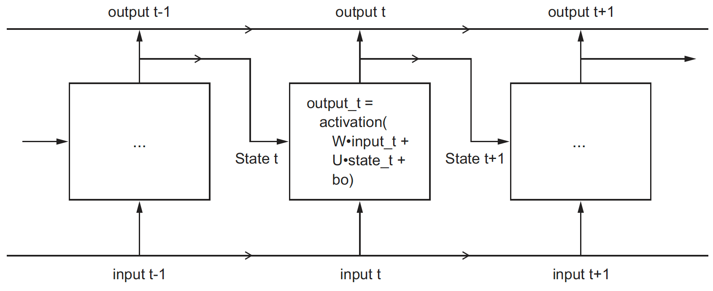

讲过前馈网络和卷积网络之后，那么就让我们来看看循环网络的实现。
相比前面提到过的网络类型，循环网络存在“记忆”，即它内部会保留过去的状态，并作为下次处理的输入的一部分。因此，在循环网络中，节点的输出如下：
output_t = activation(dot(W, input_t) + dot(U, state_t) + b)
其中，state_t = output_t，上一次的计算结果。将 RNN 概念图展开，得出下图（摘自《Deep.Learning.with.Python》）：

本文同样以 imdb 评论为例来进行说明。
Keras 中提供了 RNN 的简单实现： SimpleRNN ，先看看如何用它来搭建模型。注意，这里面需要用到 Embedding 层。
import tensorflow as tf
from tensorflow.keras.datasets import imdb
from tensorflow.keras import preprocessing
max_features = 10000
maxlen = 500
# 加载数据
(x_train, y_train), (x_test, y_test) = imdb.load_data(num_words=max_features)
# 预处理数据，将数据分割成相等长度
x_train = preprocessing.sequence.pad_sequences(x_train, maxlen=maxlen)
x_test = preprocessing.sequence.pad_sequences(x_test, maxlen=maxlen)
# 模型定义
model = tf.keras.models.Sequential([
tf.keras.layers.Embedding(max_features, 32, input_length=maxlen),
tf.keras.layers.SimpleRNN(32, return_sequences=True),
tf.keras.layers.SimpleRNN(32),
tf.keras.layers.Dense(1, activation='sigmoid')
])
model.compile(optimizer='rmsprop',
loss='binary_crossentropy',
metrics=['accuracy'])
# 训练
model.fit(x_train, y_train, epochs=10, batch_size=128, validation_split=0.2)
# 预测
print(y_train[:3])
print(model.predict_classes(x_test[:3]).flatten())
对于 SimpleRNN，其输出可以有两种格式，由 return_sequences 控制：
相比起 TF 的正统实现（layer + cell），本文做了相当的简化：只构建 SimpleRNN 层，主要的代码参考了《Deep.Learning.with.Python》。
同样，为了保证每篇的独立性，所有对象的代码都贴出来了，如果不想看之前重复的代码可以直接去看 MySimpleRNN
同前。
class MyDense(Layer):
def __init__(self, units=32):
super(MyDense, self).__init__()
self.units = units
def build(self, input_shape):
self.w = self.add_weight(shape=(input_shape[-1], self.units),
initializer='random_normal', trainable=True)
self.b = self.add_weight(shape=(self.units,),
initializer='random_normal', trainable=True)
def call(self, inputs):
return tf.nn.sigmoid(tf.matmul(inputs, self.w) + self.b)
同前。
class MyEmbedding(Layer):
def __init__(self, input_unit, output_unit):
super(MyEmbedding, self).__init__()
self.input_unit = input_unit
self.output_unit = output_unit
def build(self, input_shape):
self.embedding = self.add_weight(shape=(self.input_unit, self.output_unit),
initializer='random_normal', trainable=True)
def call(self, inputs):
return tf.nn.embedding_lookup(self.embedding, inputs)
自定义 SimpleRNN 层，注意：
class MySimpleRNN(Layer):
def __init__(self, unit, return_sequences=False):
super(MySimpleRNN, self).__init__()
self.units = unit
self.return_sequences = return_sequences
def build(self, input_shape):
self.w = self.add_weight(shape=(input_shape[-1], self.units),
initializer='random_normal', trainable=True)
self.b = self.add_weight(shape=(self.units,),
initializer='random_normal', trainable=True)
self.u = self.add_weight(shape=(self.units, self.units),
initializer='random_normal', trainable=True)
def call(self, inputs):
state = tf.zeros((1, self.units))
outputs = []
for step in range(inputs.shape[1]):
output = tf.nn.tanh(tf.matmul(inputs[:, step, :], self.w) + tf.matmul(state, self.u) + self.b)
outputs.append([output])
state = output
# 注意 shape 的变化
return tf.transpose(tf.concat(outputs, 0), (1, 0, 2)) if self.return_sequences else output
同前。
class MyModel(Layer):
def __init__(self, layers):
super(MyModel, self).__init__()
self.layers = layers
def call(self, inputs):
x = self.layers[0](inputs)
for layer in self.layers[1:-1]:
x = layer(x)
result = self.layers[-1](x)
return result
def train(self, x_train, y_train, epochs = 5):
loss = tf.keras.losses.BinaryCrossentropy()
optimizer = tf.keras.optimizers.RMSprop()
accuracy = tf.keras.metrics.Accuracy()
dataset = tf.data.Dataset.from_tensor_slices((x_train, y_train))
dataset = dataset.shuffle(buffer_size=1024).batch(64)
for epoch in range(epochs):
for step, (x, y) in enumerate(dataset):
with tf.GradientTape() as tape:
# Forward pass.
y_pred = model(x)
# Loss value for this batch.
loss_value = loss(y, y_pred)
# Get gradients of loss wrt the weights.
gradients = tape.gradient(loss_value, model.trainable_weights)
# Update the weights of our linear layer.
optimizer.apply_gradients(zip(gradients, model.trainable_weights))
# Update the running accuracy.
accuracy.update_state(y, tf.cast(y_pred >= 0.5, dtype=tf.int64))
print('Epoch:', epoch, ', Loss from last epoch: %.3f' % loss_value, ', Total running accuracy so far: %.3f' % accuracy.result(), end='\r')
print('\n')
看看效果吧：
# 定义
model = MyModel([
MyEmbedding(max_features, 32),
MySimpleRNN(32, True),
MySimpleRNN(32),
MyDense(1)
])
# 训练
model.train(x_train, y_train, 10)
# 预测
print(y_train[:20])
print(tf.cast(model(x_test[:20]) >= 0.5, dtype=tf.int64).numpy().flatten())
关于代码注意几点：
Gradients does not exist for variables …